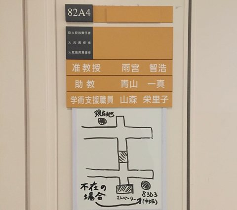
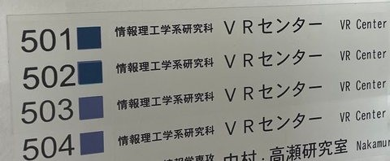
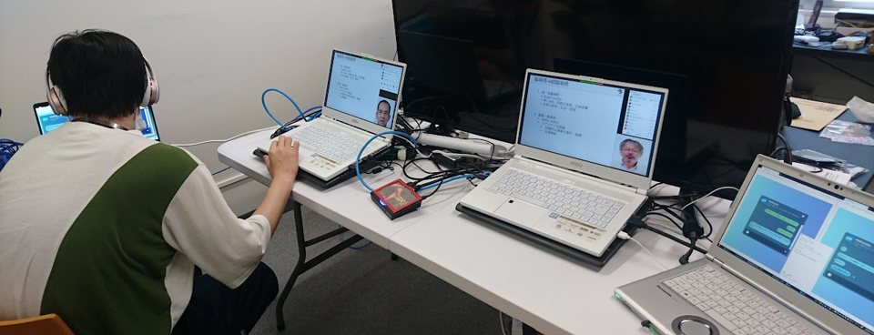
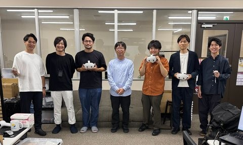
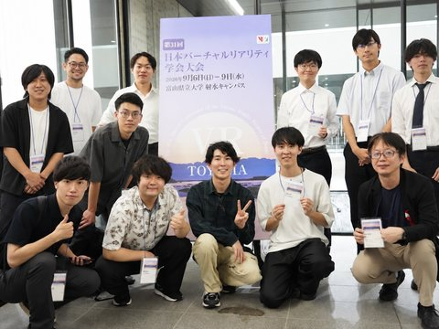
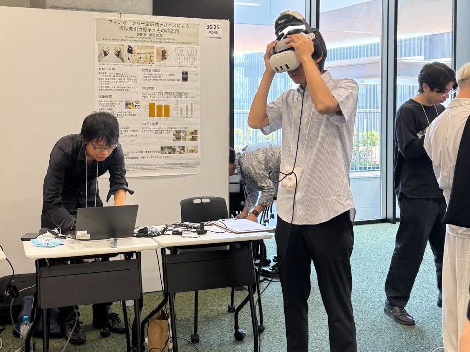

研究室についてAbout the Lab
何を研究するグループで、どのように発展してきたかをご紹介します。What we research and how the lab has grown.
AME LAB とはWhat is AME LAB?
AME LAB（Augmented Multisensory Experience Lab）は、人の知覚や運動の特性に着目し、主観的な現実感を問い直すことを目指す研究室です。AME LAB (Augmented Multisensory Experience Lab) focuses on the characteristics of human perception and movement, aiming to rethink our subjective sense of reality.
VR（バーチャルリアリティ）を幅広く対象とし、五感の情報提示、神経刺激、動作生成の技術を軸に研究しています。あわせて、身近になったVR機器を日常生活、特に教育や訓練の場でどのように活かせるかを研究し、企業とも連携しながら、これからのVRの広がり方を考えています。We study virtual reality broadly, centering on multisensory display, neural stimulation and motion generation. We also explore how consumer VR devices can be used in everyday life, especially in education and training, and work with companies on how VR will spread in society.
民生用のVR機器が普及し始めた2016年を経て、東京大学では2018年2月に、分野を横断する研究組織としてバーチャルリアリティ教育研究センター（VRセンター）が設立されました。研究室はVRセンターの研究グループとして発足し、現在は情報基盤センターを拠点に活動しています。After consumer VR devices began to spread in 2016, the University of Tokyo established the Virtual Reality Educational Research Center (VR Center) in February 2018 as a cross-disciplinary research organization. Our lab started as a research group of the VR Center and is now based at the Information Technology Center.
- 五感の情報提示Multisensory display触覚・力覚・前庭感覚などを組み合わせ、錯覚も活かして感覚を伝えます。Conveying sensations by combining touch, force and vestibular cues, and by making use of illusions.
- 動作生成Motion generationアバタや身体の動きを生み出し、体験を豊かにします。Generating the motion of avatars and bodies to enrich experiences.
- 教育・訓練への応用Education & trainingVR・メタバースを講義や技能訓練に活かします。Applying VR and the metaverse to lectures and skills training.
- 神経刺激Neural stimulation電気刺激などで、感覚や身体の動きの感じ方を変えます。Changing how we perceive sensations and body movements with electrical and other stimulation.
研究室のあゆみOur History
-
研究グループとして発足Founded as a research group
大学院修了後、約15年間にわたり民間企業で研究に携わってきた雨宮が、東京大学に着任しました。それ以前からバーチャルリアリティ教育研究センター（VRセンター）に在籍していた青山とともに、研究グループとして活動を始めました。Amemiya joined the University of Tokyo after about 15 years of research in industry following graduate school. Together with Aoyama, who was already at the Virtual Reality Educational Research Center (VR Center), he started working as a research group.
工学部2号館8階にある廣瀬・葛岡・鳴海研究室の一室を間借りする形でスタートし、その後、工学部1号館5階に研究室を構えました。これまで取り組んできた触覚や身体感覚に関する研究に加え、VRを教育や訓練に活かすことを新たなミッションとして、研究活動を広げていきました。We started out in a room borrowed from the Hirose–Kuzuoka–Narumi Lab on the 8th floor of Engineering Building 2, and later set up our own lab on the 5th floor of Engineering Building 1. In addition to our ongoing research on haptics and bodily sensation, we took on a new mission of applying VR to education and training, and broadened our research.

-
葛岡・雨宮・鳴海研究室としてAs the Kuzuoka–Amemiya–Narumi Lab
2020年度からは、情報理工学系研究科で葛岡・雨宮・鳴海研究室として活動しながら、VRセンターの研究グループとしての活動も進めてきました。工学部の学部生の卒業研究や大学院生の研究を指導し、学生とともに研究に取り組む体制が整っていきました。From FY2020, we worked as the Kuzuoka–Amemiya–Narumi Lab in the Graduate School of Information Science and Technology, while continuing our activities as a research group of the VR Center. We supervised the graduation research of undergraduates in the Faculty of Engineering and the research of graduate students, and gradually built a team that carries out research together with students.
一方、新型コロナウイルス感染症の拡大により、研究会や研究指導はオンラインが中心となりました。参加者を募って行う実験にも大きな制約があり、自宅で実験を行うなど、限られた環境のなかで研究を進める工夫を重ねました。2021年頃からのメタバースへの関心の高まりも背景に、ソーシャルVRやアバタに関する研究にも力を入れるようになりました。Meanwhile, with the spread of COVID-19, lab meetings and supervision moved mostly online. Experiments with recruited participants were also severely restricted, so we found ways to keep our research going in a limited environment, such as running experiments at home. With interest in the metaverse growing from around 2021, we also began to put more effort into research on social VR and avatars.


オンラインを使った実験の様子An experiment conducted online -
情報基盤センターへTo the Information Technology Center
2023年度からは、情報基盤センター 情報メディア教育研究部門において、雨宮が独立した研究責任者（PI）として研究室を主宰しています。大学院では、総合文化研究科と学際情報学府の学生を受け入れ、触覚や身体感覚、VRを中心とした研究と教育に取り組んでいます。Since FY2023, Amemiya has led the lab as an independent principal investigator (PI) in the Information Media Education Research Division of the Information Technology Center. We accept graduate students through the Graduate School of Arts and Sciences and the Graduate School of Interdisciplinary Information Studies, and work on research and education centered on haptics, bodily sensation and VR.
学生が国際的な研究の場で成果を発信し、議論する経験を大切にしています。大学院在学中に少なくとも1回は国際会議で発表することを方針とし、自分の研究を世界の研究者に伝え、さまざまな視点からの意見に触れる機会を設けています。We value the experience students gain by presenting and discussing their work in international research settings. Our policy is for every student to present at an international conference at least once during graduate school, so that they can share their research with researchers around the world and hear views from many different perspectives.

-
体験を通じて、感覚の面白さを伝えるSharing the fascination of the senses through experience
現在は、情報基盤センター 浅野本館を拠点に、スタッフと学生が日々の研究に取り組んでいます。研究室では、つくった装置を互いに体験し、そこで感じたことをもとに議論する時間を大切にしています。実際に体験することで生まれる気づきや疑問を、装置の改良や次の実験につなげています。Today, our staff and students carry out their daily research at the Asano Main Building of the Information Technology Center. In the lab, we value the time we spend trying out one another’s devices and discussing what we felt. The insights and questions that arise from first-hand experience lead to improvements to the devices and to the next experiments.
研究成果を伝える際にも、論文発表に加えて、実際に体験していただくデモ展示を重視しています。言葉や映像だけでは伝えきれない感覚の面白さを共有し、体験した方々との対話を通じて、研究の可能性を広げていきたいと考えています。When we share our results, too, we place importance on demo exhibits that people can actually try, in addition to papers. We hope to share the fascination of the senses that words and video alone cannot convey, and to expand the possibilities of our research through dialogue with those who try our demos.

第31回日本バーチャルリアリティ学会大会にて（2026年9月）At the 31st Annual Conference of the Virtual Reality Society of Japan (September 2026) 
学会でのデモ展示の様子A demo exhibit at a conference
雨宮が東大着任前から続けてきた研究（非対称振動による牽引力錯覚「ぶるなび」など）は、研究紹介ページの「これまでの研究」で紹介しています。ぶるなびの開発の経緯は「ぶるなびの歩み」にまとめています。Research that Amemiya has continued since before joining the University of Tokyo, such as the pulling illusion from asymmetric vibration (Buru-Navi), is introduced in Past Research. The development of Buru-Navi is told in The Story of Buru-Navi.
研究室の活動を応援していただける方は、研究室へのご寄附をご覧ください。If you would like to support our work, please see Support Our Lab.